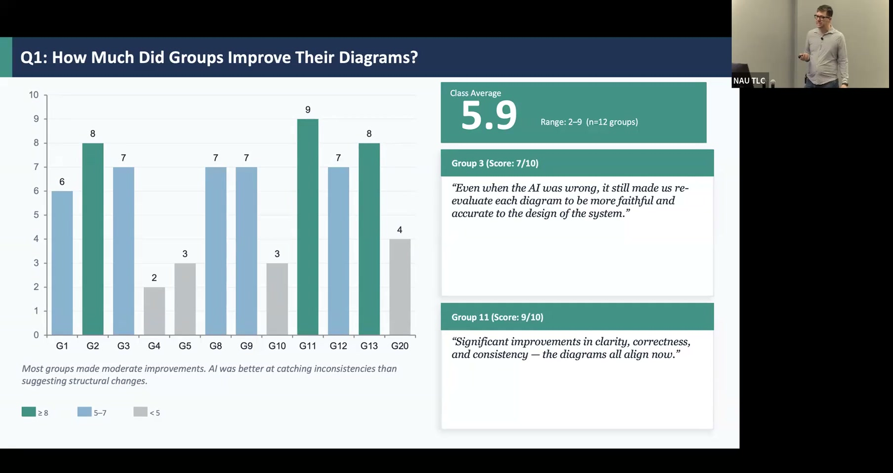

AI Feedback as a Thinking Scaffold in Software Engineering Courses
Using AI-generated code review to teach students to think critically rather than defer to AI suggestions.
Presented by Marco A. Gerosa, Professor of Computer Science, Northern Arizona University
About This Project
Students who passively accept AI suggestions miss the deeper learning that comes from evaluation and judgment. In software architecture and software engineering courses at NAU, students often lack the professional experience needed to reason about quality trade-offs — and when AI tools produce plausible-sounding but wrong recommendations, uncritical adoption compounds the problem. This project introduced a structured five-step workflow in which students receive AI-generated code review feedback and are required to document, for each suggestion, whether they accepted or rejected it and why.
Across 12 student groups in CS440 (Software Architecture), the class-average improvement score on revised diagrams was 5.9 out of 10, with a range of 2 to 9. Students who engaged critically with AI feedback — including flagging hallucinations and incorrect suggestions — showed stronger learning gains than those who simply implemented what the AI recommended. Roughly two-thirds of AI suggestions were rejected upon critical examination, and the hallucinations themselves became pedagogically valuable: they gave students concrete practice identifying AI limitations. The GPS analogy proved instructive — just as relying solely on navigation atrophies spatial reasoning, passively following AI output risks replacing the cognitive work that builds expertise. An NSF proposal is in preparation to scale this work across institutions.
Project Highlights

